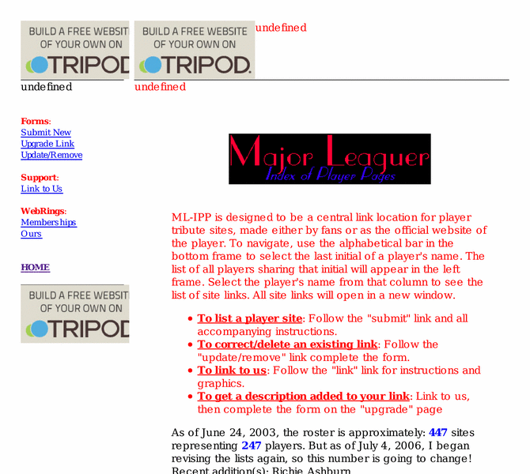

Previewing: Major Leaguer: Index of Player Pages Previewing: Major Leaguer: Index of Player Pages 
Use the left/right red arrow controls to navigate through this ring - Click the preview image to visit the member site.

Lists over 400 non-commercial, fan-made sites dedicated to over 200 current and former Major or Negro League professional baseball players. Visit our links or add your own! Also check out our BRAND NEW, members-exclusive WebRing! (M)
Major Leaguer: Index of Player Pages owned by:
 mlipp mlipp
A member of the original webring since 01/08/2002.
|
|